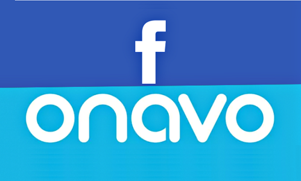

15 Fev 2018

O aplicativo Onavo VPN do Facebook é a essência da ironia situacional - invadindo enquanto reivindica proteger a privacidade.
O Facebook começou a lançar um aplicativo controverso para seus usuários de Android e iPhone (iOS), que é um programa VPN gratuito da Onavo, uma empresa israelense comprada pelo Facebook em outubro de 2013, que promete proteger os dados de navegação dos usuários. No entanto, o programa é acusado de monitorar o tráfego de usuários e rastrear os principais concorrentes da empresa de Mark Zuckerberg.
A promoção do aplicativo VPN pode ser encontrada no menu sanduíche do Facebook para Android e iOS sob o nome de Protect, conforme publicado pela TechCrunch. Ao clicar na opção, o usuário é redirecionado para o Google Play ou a App Store para baixar o programa para o celular. Nas lojas, o programa se vende como proteção opcional de dados e economiza o consumo de internet móvel. Mas, os pesquisadores dizem que o propósito do software é diferente.
Gizmodo chama Onavo de um spyware corporativo enquanto eu em agosto, um relatório publicado pelo Wall Street Journal revelou como o Facebook estaria usando a VPN do Onavo para aproveitar os concorrentes. Fontes de notícias informaram que a rede social de Mark Zuckerberg já conhecia o declínio no uso de Snapchat no final de 2016, mesmo antes do lançamento oficial em fevereiro de 2017.
Como outros serviços na categoria, o Free VPN Protect cria uma rede privada que criptografa o tráfego de navegação do usuário na Internet. Durante o processo, no entanto, o programa redireciona a informação para os servidores do Facebook, que registram as ações em seu banco de dados.
Com esta informação em mãos, o Facebook pode descobrir dados como o que as pessoas de aplicativos estão usando, com que frequência, quanto tempo e se o programa é usado por mais homens ou mulheres nesse país. Além disso, a rede social pode até mesmo conhecer o número de fotos marcadas ou postadas por um usuário normal durante a semana se o tráfego original não estiver criptografado.
Embora seja difícil conhecer o número exato de usuários do aplicativo Onavo VPN, o número de downloads do programa é bastante significativo. Em agosto, a estimativa era que o aplicativo havia sido baixado 24 milhões de vezes, principalmente no Android. Agora, com a publicidade no Facebook, a tendência é que o número aumenta.
De acordo com o Wall Street Journal, fontes ligadas ao Facebook dizem que a empresa usou os dados VPN da Onavo para lançar funções em sua aplicação e tomar decisões estratégicas. Na luta contra Snapchat, por exemplo, a rede social conseguiu descobrir o número de snaps compartilhados diariamente e observar a queda do rival após o lançamento das histórias no Instagram.
Meses depois de comprar Onavo em 2013, o Facebook também usou dados de serviço para bater no martelo em sua maior aquisição WhatsApp. O aplicativo VPN revelou que a mensagem foi instalada em 99% de todos os telefones Android na Espanha, levando a empresa Mark Zuckerberg a adquirir o mensageiro em 2014 por US $ 22 bilhões.
Anos depois, o Facebook usaria a mesma estratégia para monitorar o uso de aplicativos de vídeo ao vivo, como Periscope e Meerkat. A informação ajudou a rede social a lançar o recurso de transmissão em seu principal aplicativo para Android e iPhone no início de 2016.
Lembre-se, não existe um almoço grátis, especialmente quando se trata de VPNs gratuitas. Anteriormente, houve dois incidentes que expuseram a forma como os usuários devem ser cautelosos quando se trata de usar VPNs gratuitas, por exemplo, o PureVPN que afirmou em sua política de privacidade que a empresa "Não monitora a atividade do usuário nem mantemos os logs. Nós, portanto, não registramos suas atividades ", mas não só a empresa manteve registros, mas também ajudou o FBI a rastrear um cyberstalke r fornecendo seus logs.
Enquanto isso, o Hotspot Shield outro aplicativo VPN altamente popular no Android e a loja iOS foram capturados violando a privacidade do usuário, interceptando o tráfego da Web, mantendo logs de atividades e redirecionando para sites de terceiros, especialmente empresas publicitárias .
A promoção do aplicativo VPN pode ser encontrada no menu sanduíche do Facebook para Android e iOS sob o nome de Protect, conforme publicado pela TechCrunch. Ao clicar na opção, o usuário é redirecionado para o Google Play ou a App Store para baixar o programa para o celular. Nas lojas, o programa se vende como proteção opcional de dados e economiza o consumo de internet móvel. Mas, os pesquisadores dizem que o propósito do software é diferente.
Gizmodo chama Onavo de um spyware corporativo enquanto eu em agosto, um relatório publicado pelo Wall Street Journal revelou como o Facebook estaria usando a VPN do Onavo para aproveitar os concorrentes. Fontes de notícias informaram que a rede social de Mark Zuckerberg já conhecia o declínio no uso de Snapchat no final de 2016, mesmo antes do lançamento oficial em fevereiro de 2017.
Como outros serviços na categoria, o Free VPN Protect cria uma rede privada que criptografa o tráfego de navegação do usuário na Internet. Durante o processo, no entanto, o programa redireciona a informação para os servidores do Facebook, que registram as ações em seu banco de dados.
Com esta informação em mãos, o Facebook pode descobrir dados como o que as pessoas de aplicativos estão usando, com que frequência, quanto tempo e se o programa é usado por mais homens ou mulheres nesse país. Além disso, a rede social pode até mesmo conhecer o número de fotos marcadas ou postadas por um usuário normal durante a semana se o tráfego original não estiver criptografado.
Embora seja difícil conhecer o número exato de usuários do aplicativo Onavo VPN, o número de downloads do programa é bastante significativo. Em agosto, a estimativa era que o aplicativo havia sido baixado 24 milhões de vezes, principalmente no Android. Agora, com a publicidade no Facebook, a tendência é que o número aumenta.
De acordo com o Wall Street Journal, fontes ligadas ao Facebook dizem que a empresa usou os dados VPN da Onavo para lançar funções em sua aplicação e tomar decisões estratégicas. Na luta contra Snapchat, por exemplo, a rede social conseguiu descobrir o número de snaps compartilhados diariamente e observar a queda do rival após o lançamento das histórias no Instagram.
Meses depois de comprar Onavo em 2013, o Facebook também usou dados de serviço para bater no martelo em sua maior aquisição WhatsApp. O aplicativo VPN revelou que a mensagem foi instalada em 99% de todos os telefones Android na Espanha, levando a empresa Mark Zuckerberg a adquirir o mensageiro em 2014 por US $ 22 bilhões.
Anos depois, o Facebook usaria a mesma estratégia para monitorar o uso de aplicativos de vídeo ao vivo, como Periscope e Meerkat. A informação ajudou a rede social a lançar o recurso de transmissão em seu principal aplicativo para Android e iPhone no início de 2016.
Lembre-se, não existe um almoço grátis, especialmente quando se trata de VPNs gratuitas. Anteriormente, houve dois incidentes que expuseram a forma como os usuários devem ser cautelosos quando se trata de usar VPNs gratuitas, por exemplo, o PureVPN que afirmou em sua política de privacidade que a empresa "Não monitora a atividade do usuário nem mantemos os logs. Nós, portanto, não registramos suas atividades ", mas não só a empresa manteve registros, mas também ajudou o FBI a rastrear um cyberstalke r fornecendo seus logs.
Enquanto isso, o Hotspot Shield outro aplicativo VPN altamente popular no Android e a loja iOS foram capturados violando a privacidade do usuário, interceptando o tráfego da Web, mantendo logs de atividades e redirecionando para sites de terceiros, especialmente empresas publicitárias .